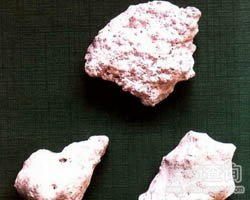

炉甘石

拼音
Lú Gān Shí
别名
甘石、浮水甘石
来源
本品为碳酸盐类矿物方解石族菱锌矿，主含碳酸锌（ZnCO3）。采挖后，洗净，晒干，除去杂石。
生境分布
产于广西、四川、云南、湖南等地。
药材特点
菱锌矿（《石雅》） 三方晶系。晶形呈菱面体，但少见。一般多为土块状、钟乳状、多孔块状等。颜色因杂质而不同，纯净者为白色，含铅者为深绿色，含镉者为黄色，含铁者呈褐色。条痕为白色。玻璃光泽，半透明至不透明。解理依菱面，成107°之斜角，仅显晶集合体始有之.断口参差状。硬度5。比重4.1～4.5。性脆。常见于闪锌矿氧化带中。
性状
本品为块状集合体，呈不规则的块状，灰白色或淡红色。表面粉性，无光泽，凹凸不平，多孔，似蜂窝状。体轻，易碎。无臭，味微涩。
性味
甘，平。
功能主治
解毒明目退翳，收湿止痒敛疮。用于目赤肿痛，眼缘赤烂，翳膜胬肉，溃疡不敛，脓水淋漓，湿疮，皮肤瘙痒。
用法用量
不作内服，外用适量。
化学成分
主要成分为碳酸锌，尚含少量氧化钙0.27％，氧化镁0.45％，氧化铁0.58％，氧化锰0.01％。此石中的锌，往往为少量的铁（二价）所取代。另外，有的炉甘石品种尚含少量钻、铜、镉、铅和痕量的锗与铟。青岛和济南的炉甘石，主要成分为碳酸锌，并含少量铁、铝、钙、镁等杂质及极微量的钠。 煅炉甘石，主要成分为氧化锌。
药理作用
1：为不溶于水的天然碳酸锌：广用于皮肤科，作为中度的防腐、收敛、保护剂治疗皮肤炎症或表面刨伤
2：一般用5～10％水混悬液（洗剂）：亦有用油膏者
摘录
《中国药典》